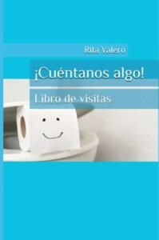
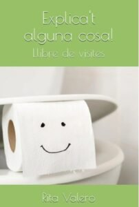

<?xml version="1.0" encoding="UTF-8"?><rss version="2.0"
	xmlns:content="http://purl.org/rss/1.0/modules/content/"
	xmlns:wfw="http://wellformedweb.org/CommentAPI/"
	xmlns:dc="http://purl.org/dc/elements/1.1/"
	xmlns:atom="http://www.w3.org/2005/Atom"
	xmlns:sy="http://purl.org/rss/1.0/modules/syndication/"
	xmlns:slash="http://purl.org/rss/1.0/modules/slash/"
	>

<channel>
	<title>ExplicatAlgunaCosa | Rita Valero</title>
	<atom:link href="./index.html" rel="self" type="application/rss+xml" />
	<link>../../../index.html</link>
	<description>Voz y palabras</description>
	<lastBuildDate>Thu, 11 Dec 2025 15:51:27 +0000</lastBuildDate>
	<language>ca</language>
	<sy:updatePeriod>
	hourly	</sy:updatePeriod>
	<sy:updateFrequency>
	1	</sy:updateFrequency>
	<generator>https://wordpress.org/?v=7.1.3</generator>

<image>
	<url>../../../wp-content/uploads/2021/08/cropped-favicon-rita-valero-32x32.jpg</url>
	<title>ExplicatAlgunaCosa | Rita Valero</title>
	<link>../../../index.html</link>
	<width>32</width>
	<height>32</height>
</image> 
	<item>
		<title></title>
		<link>../../../project/1785/index.html</link>
					<comments>../../../project/1785/index.html#respond</comments>
		
		<dc:creator><![CDATA[Rita Valero]]></dc:creator>
		<pubDate>Thu, 11 Dec 2025 15:51:27 +0000</pubDate>
				<guid isPermaLink="false">../../../index.html#038;p=1785</guid>

					<description><![CDATA[No sé en qué momento se me ocurrió que necesitábamos un libro de visitas… ¡para el baño! Pero así soy yo: se me cruzan ideas raras, me río sola, y al final acabo convirtiéndolas en algo real. Y esta vez ha salido algo muy especial. Se llama ¡Cuéntanos algo!Un libro de visitas para dejar en [&#8230;]]]></description>
										<content:encoded><![CDATA[<p><a href="https://www.amazon.es/%C2%A1Cu%C3%A9ntanos-algo-visitas-Rita-Valero/dp/B0F6KP7K8L/ref=sr_1_1?__mk_es_ES=%C3%85M%C3%85%C5%BD%C3%95%C3%91&amp;crid=3F7T3ANHPFDN9&amp;dib=eyJ2IjoiMSJ9.9taK7PZwYla5VdossaUjpw.eBa_KoaLAX2pPg1Weq4oDmIcNj2-jP6DIXBfQgJEjho&amp;dib_tag=se&amp;keywords=cu%C3%A9ntanos+algo&amp;qid=1765467437&amp;s=books&amp;sprefix=cu%C3%A9ntanos+algo%2Cstripbooks%2C92&amp;sr=1-1" target="_blank" rel="noopener"></a></p>
<p data-start="370" data-end="561">No sé en qué momento se me ocurrió que necesitábamos un libro de visitas… ¡para el baño! Pero así soy yo: se me cruzan ideas raras, me río sola, y al final acabo convirtiéndolas en algo real.</p>
<p data-start="563" data-end="602">Y esta vez ha salido algo muy especial.</p>
<p data-start="604" data-end="871">Se llama <strong data-start="613" data-end="633">¡Cuéntanos algo!</strong><br data-start="633" data-end="636" />Un libro de visitas para dejar en el baño, donde cada persona puede escribir lo que quiera: una frase ingeniosa, una confesión, un dibujo improvisado, una tontería brillante o incluso una verdad que no se atrevería a decir en voz alta.</p>
<p data-start="873" data-end="973">Es sencillo, divertido y un poco loco.<br data-start="911" data-end="914" />Y lo mejor: está disponible <strong data-start="942" data-end="972">en castellano y en catalán</strong>.</p>
<p data-start="873" data-end="973"><a href="https://www.amazon.es/Explicat-alguna-cosa-Llibre-visites/dp/B0FF271BJG" target="_blank" rel="noopener"></a>Me hacía ilusión compartirlo contigo.<br data-start="1053" data-end="1056" />Porque a veces, lo más bonito no es anunciar algo… sino contarlo con una sonrisa.</p>
<p data-start="1139" data-end="1143">🧻💚</p>
<p class="isSelectedEnd"><em>¡Cuéntanos algo!</em> de Rita Valero es el libro de visitas más divertido: déjalo en el WC y deja que tus invitados escriban ocurrencias, dibujos, pensamientos profundos (o no tan profundos).</p>
<p>Un regalo perfecto para casas con humor. 🚽</p>
<p>#RegalosOriginales #HumorEnCasa #CuéntanosAlgo</p>
<p>&nbsp;</p>
]]></content:encoded>
					
					<wfw:commentRss>../../../project/1785/feed/index.html</wfw:commentRss>
			<slash:comments>0</slash:comments>
		
		
			</item>
	</channel>
</rss>
